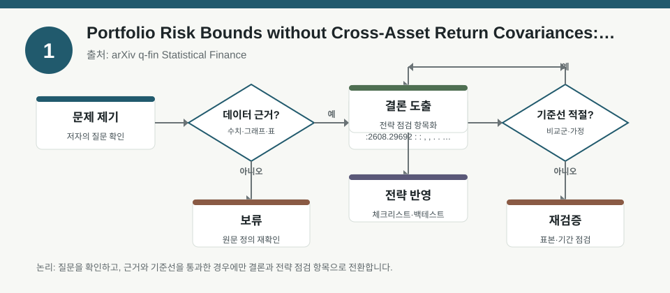
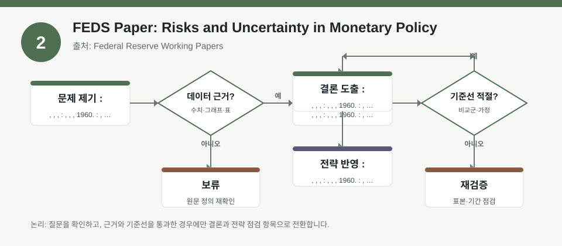
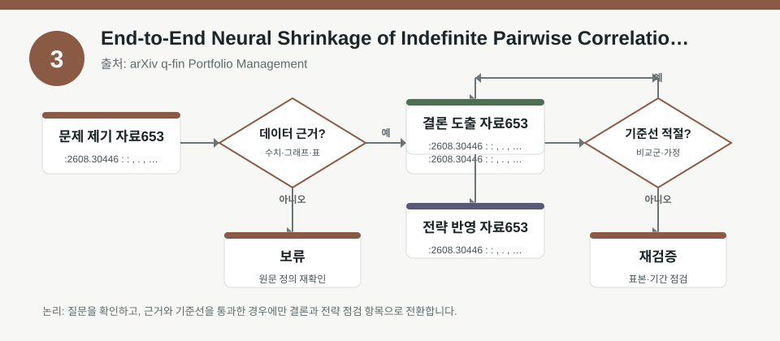

핵심 요약
- 결론: 이번 자료들은 공통적으로 “상관·시나리오·표본 제약”을 어떻게 다루느냐가 포트폴리오 위험 해석의 핵심임을 보여줍니다.
- 원칙: 숫자 성과보다 가정과 한계를 먼저 확인해야 하며, 특히 한국 투자자는 KOSPI/KOSDAQ 업종, 환율, 금리, 인플레이션, 변동성, 신용·규제 변수의 민감도를 따로 점검해야 합니다.
주목할 자료
| 번호 | 자료 | 출처 | 원문 | 핵심 내용 | 데이터 포인트 | 리스크/한계 |
|---|---|---|---|---|---|---|
| 1 | Portfolio Risk Bounds without Cross-Asset Return Covariances: Distributional Fields from Language-Model Representations | arXiv q-fin Statistical Finance | 원문 보기 | 교차자산 공분산 추정이 어려운 환경에서, 분포형 기업 특성으로 포트폴리오 위험의 상한을 구성하는 접근을 제시합니다. | 공분산 대신 분포 특성, one-sided risk certificate, 고차원·단기 표본 문제 | 수익률 예측이 아니라 위험 경계이며, 자산 간 링크 가정과 표본 적합성을 확인해야 합니다. |
| 2 | FEDS Paper: Risks and Uncertainty in Monetary Policy | Federal Reserve Working Papers | 원문 보기 | 통화정책의 위험·불확실성을 시나리오 분석과 분포예측의 두 전통으로 구분해 설명하며, 둘은 보완적이지만 동일하지 않다고 봅니다. | 시나리오 분석, 확률이 붙은 분포예측, 중앙은행의 위험 모니터링 프레임 | 정책 경로는 확률이 아닌 서사일 수 있어, 실제 금리·물가 경로와 연결되는지 검증이 필요합니다. |
| 3 | End-to-End Neural Shrinkage of Indefinite Pairwise Correlation Matrices for Small-Cap-Inclusive Portfolios | arXiv q-fin Portfolio Management | 원문 보기 | 소형주 포함 포트폴리오에서 비동시·희소 거래로 인해 생기는 불완전 상관행렬을 신경망 shrinkage로 안정화하는 방법을 다룹니다. | pairwise-complete 상관, indefinite matrix, small-cap-inclusive universe, 최근상장·간헐거래 | 상관행렬 안정화가 실제 초과성과를 뜻하지 않으며, 거래비용·유동성·표본기간을 함께 확인해야 합니다. |
자료별 상세
1. Portfolio Risk Bounds without Cross-Asset Return Covariances: Distributional Fields from Language-Model Representations

- 핵심: 교차자산 공분산이 불안정한 상황에서 위험의 “추정값”보다 “상한”을 먼저 제시하는 발상이 핵심입니다.
- 데이터 포인트: 분포형 기업 특성으로 one-sided portfolio risk certificate를 구성하고, 단기·고차원 패널의 공분산 문제를 우회합니다.
- 리스크: 자산 간 수익률 연결 가정이 유지되는지, 그리고 분포 특징이 실제 포트폴리오 위험을 충분히 대표하는지 확인이 필요합니다.
- 투자전략 반영 예시: KOSPI/KOSDAQ 업종 쏠림, 환율 민감 수출주 비중, 금리 민감 성장주 비중을 점검할 때 “상관 추정이 불안정한 구간”을 별도 체크리스트로 두는 방식이 유용합니다.
- 실행 예시: 최근 6개월과 12개월 표본에서 공분산 기반 위험값과 대체 위험상한을 나란히 계산해, 표본 길이에 따라 위험 판단이 얼마나 흔들리는지 비교합니다.
2. FEDS Paper: Risks and Uncertainty in Monetary Policy

- 핵심: 중앙은행은 시나리오 서술과 확률예측을 함께 보지만, 두 방식이 제공하는 정보가 다르다는 점을 분명히 합니다.
- 데이터 포인트: 시나리오는 확률이 없는 내러티브이고, 분포예측은 확률을 포함한 경로로 해석한다는 구분이 중요합니다.
- 리스크: 정책 문구를 곧바로 금리 경로로 단정하면 안 되며, 물가·고용·금융안정 지표와의 정합성을 따로 검토해야 합니다.
- 투자전략 반영 예시: 한국 투자자는 한국은행, 미국 연준, 글로벌 물가·고용 지표를 함께 보면서 금리 민감 업종과 환율 민감 업종의 노출도를 점검할 수 있습니다.
- 실행 예시: “금리 상향 시나리오”, “물가 재가속 시나리오”, “성장 둔화 시나리오”를 나눠 두고, 각각에서 KOSDAQ 성장주·은행·수출주의 민감도를 메모하는 식으로 점검합니다.
3. End-to-End Neural Shrinkage of Indefinite Pairwise Correlation Matrices for Small-Cap-Inclusive Portfolios

- 핵심: 거래가 뜸한 소형주가 섞이면 공통 기간을 강제로 맞추는 방식보다, 자산쌍별 겹침 정보를 살리는 상관추정이 더 현실적일 수 있습니다.
- 데이터 포인트: pairwise-complete 상관은 정보를 최대한 보존하지만 행렬이 indefinite가 될 수 있어, shrinkage로 안정화를 시도합니다.
- 리스크: 상관행렬이 매끈해져도 유동성 리스크, 체결비용, 급등락 구간의 비정상 상관은 그대로 남을 수 있습니다.
- 투자전략 반영 예시: KOSDAQ 소형주를 포함한 포트폴리오라면 업종·시총·거래대금별로 상관 안정성 점검표를 따로 두고, 환율·금리 이벤트 전후의 공분산 흔들림을 확인하는 방식이 적절합니다.
- 실행 예시: 공통 1년 윈도우와 pairwise-complete 윈도우를 각각 적용해 상관행렬의 안정성, 결측 민감도, 포트폴리오 분산 추정 차이를 비교합니다.
팩터·리스크·포트폴리오 관점
- 핵심: 세 자료는 모두 팩터 노출을 “예측”보다 “추정의 안정성” 문제로 재해석하게 만듭니다.
- 핵심: 한국 시장에서는 업종 팩터뿐 아니라 환율, 금리, 물가, 유동성, 신용스프레드, 규제 변수의 동시 민감도를 함께 봐야 합니다.
- 검수: 숫자 성과나 정책 경로를 단정하기보다, 표본 길이·상관 가정·시나리오의 확률 유무·거래비용 포함 여부를 먼저 확인해야 합니다.
정리
- 결론: 이번 자료의 공통 메시지는 위험관리에서 “정확한 점추정”보다 “가정이 약한 구간을 식별하는 능력”이 더 중요하다는 점입니다.
- 다음 확인: 각 연구의 표본 구간, 자산군 범위, 비용 반영 여부, 그리고 한국 주식 포트폴리오에 옮길 때의 환율·금리 민감도 검증을 추가로 확인해야 합니다.